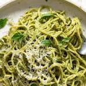

Pesto Pasta

Description
Easy pasta dish ready in under 10 minutes
Add chicken or salmon for extra munch
Serve with rocket leaves and sundried tomatoes for added colour!
Ingredients
- Spaghetti or Linguine - I use wholemeal for extra fibre
- Frozen peas, or green veg of choice
- Frozen spinach
- Homemade pesto or jar of shop-bought pesto
- optional parmesan cheese or basil leaves to garnish
Recipe
- Put a large pan of salted water on to boil
- Add pasta - quantity according to number of servings required
- Add a handful of peas and some spinach
- Cook for about 9 to 11 minutes depending if you like your pasta al dente
- Drain and add a good dollop of pesto. Stir in and serve